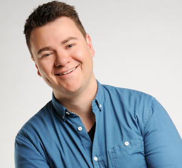
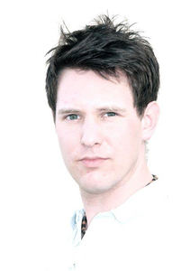

08. bis 10.09.2017
Referenten:

Michael Wesner
Ist 37 Jahre, Pastor (ICF Paderborn) und Lehrer (Sport / Geschichte),
verheiratet mit Beate (seit 13 Jahren), mit ihr hat er vier gemeinsame
Kinder (8 bis 2 Jahre).
Sein Lebensmotto - grenzenlos glauben, bedingungslos lieben, selbstlos
leiten, differenziert denken, leidenschaftlich leben
Er liebt die Gemeinde Jesus Christi, große Events und gemeinsames Gebet, Laufen gehen, Guten Whisky, Ribeye Steak.

Philipp Kruse
Philipp Kruse (Jahrgang `84) ist verheiratet mit Sarah.
Er ist Jugendreferent im CVJM Lemgo und Leiter von „Das Bibel Projekt“ in Deutschland.
Er studierte an der Universität Bielefeld und an der Bibelschule Brake.
Sein Herz brennt für Jugendarbeit und er liebt es junge Menschen mit Jesus zu verbinden.
In seiner Freizeit findet man ihn entweder im Stadion von Arminia Bielefeld oder auf Skiern in den österreichischen Bergen.